Tutorial 1: Object Mapping Basics
Tu dowiesz się o jak ustawiach sprite na ekranie
Początkowo otwórz Tails7.mfa i przejdź do frame Room#0000
Następnie uruchamiamy projekt sprawdzając czy działa.
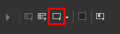Powinieneś mieć taki widok:
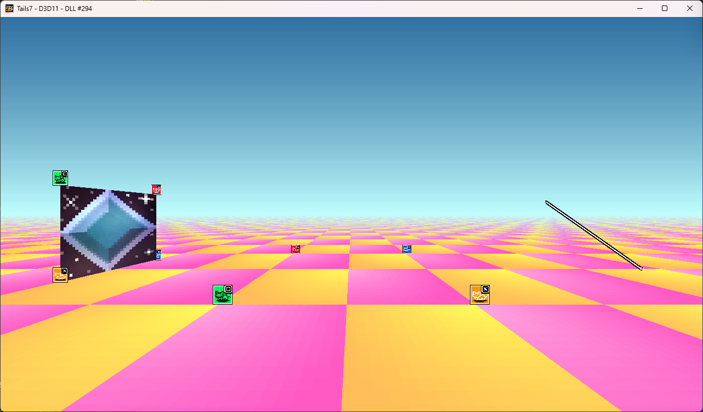Używaj klawiszy W A S D do poruszania się w osi X i Y.
Używaj klawiszy Spacja i Ctrl do poruszania się w osi X.
Używaj klawiszy Strzałka w lewo i Strzałka w prawo do obraca kamerew osi X
Używaj klawiszy Strzałka w góre i Strzałka w dół do obraca kamerew osi Z.
Używaj klawiszy Q E do zmiany zakrzywienia.
Okej, teraz skupmy się by stworzyć nowy obiekt który będziemy modyfikować.
Zatem upewniam się że jest wybrana prawidłowa wartstwa. (Warstwa 3 jest ogólnie przeznaczona do obiektów sprite, fade i linii, jednak możesz zmienić to na swoje potrzeby)
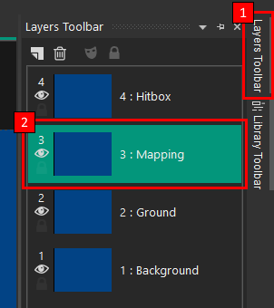
Wybieram obiekt (Sprite) Orange Fox i go klonuje, powinen się stworzyć (Sprite) Orange Fox 2
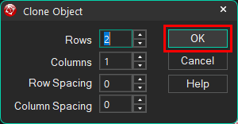
Obiekt się stworzył jednak jest POD obiektem (Sprite) Green Wolf więc ten obiekt przesuwam na sam dół warstw.
Przesuwam obiekt i ✨TA DA!✨ mamy własny obiekt. Jednak zanim uruchomisz projekt trzeba go wyróżnić by wiedzieć że on faktycznie jest po uruchomieniu.
Zmieniam nazwę obiekut (Sprite) Orange Fox 2 na (Sprite) My Object.
Właczam flagę Auto-update by ikona się zaaktulizowała sama po zmianie tekstury.
Zmieniam teksturę na domyślny diament i upewniam się punkt Hot Spot na sam dół tekstury wycentrowany.
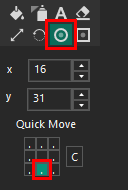
Ostatnim krokiem zmieniam wartości _PositionX i _PositionY na 512.0.

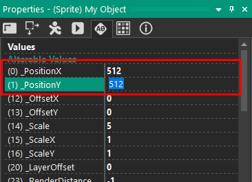
Uruchamiam projekt i nasz obiekt się wyświetla!
W event editor tworze proste wydarzenia by na bierząco zmeniał pozycję tych wartości by dawał efekt okręgu.

Deaktywuje te wydarzenia gdyż przechodzimy do kolejnego punktu.
Skupiamy się teraz na zmiennych _OffsetX i _OffsetY. _OffsetX ma mniej zastosowania gdyż przesuwa obiekt na ekranie w osi X jednak _OffsetY jest bardziej skuteczny gdyż jako że przesuwa obiekt na ekranie Y to powoduje iluzje głębi.
Ustawiam wartość _OffsetY na -256.0 co spowoduje przesunięcie do góry.
Jak widzimy, obiekt jest w powietrzu.
W event editor tworze prostę wydarzenie które powoduje że obiekt będzie się odbijał w nieskończoność od podłogi.
Deaktywuje to wydarzenie bo teraz skupiemy się na kolejnym punkcie
Teraz zajmiejmy się zmiennymi _Scale, _ScaleX i _ScaleY. Zmienne te zmieniają skale obiektu.
Zmieniam wartość _Scale z 5.0 na 25.0 co powoduje że obiekt będzie większy.
Jak widzimy obiekt jest większy.
Dodatkowo zmieniam wartość _ScaleX z 1.0 na 3.0 co spowoduje że obiekt będzie szerszy.
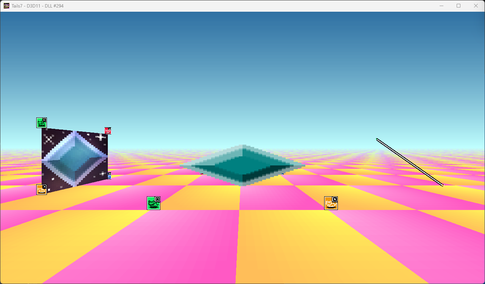
Jednak gdy zmieniam wartość _ScaleY z 1.0 na 3.0 to spowoduje że obiekt będzie wyższy.
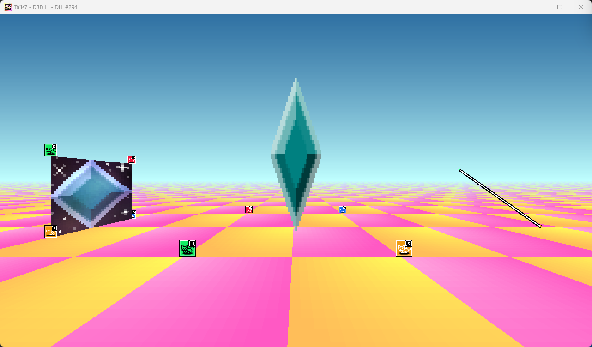
Zmieniam wartości na takie jak były poprzednio.
W event editor tworze wydarzenie które zmienia dynamicznie ogólną skale obiektu co daje efekt pulsowania.
I jak widzimy, tak wygląda rezultat:
Możesz zmienić punkt Hot Spot by był wycentrowany dla zmiany skali by pulsował do środka.
Tworze wydarzenie które osobno dla _ScaleX i _ScaleY zmienia wartości jak podałem poniżej:
Deaktywuje te wydarzenia gdyż teraz zajmiejmy się nastepną zmienną.
Teraz zajmiejmy się zmienną _LayerOffset. Może zmieniać pozycję warstwy dla obiektu. Aby zademonstrować co mam na myśli, tworze 2 kolejne kopie obiektu. Nazwyam je (Sprite) My Object Red i (Sprite) My Object Yellow.
Dla nastepujących obiektów zmieniam wartości tak jak podałem poniżej:
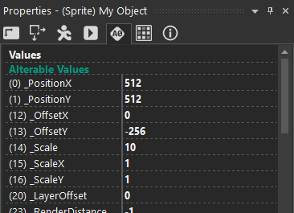
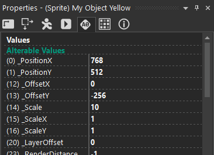
Tworze następujące wydarzenia w Event Editor które ustawia pozycję gracza na podane kordynaty i gdy nacisne dany przycisk, zmieni wartość _OffsetLayer osobno dla danego obiektu.
To się stanie gdy nacisne przycisk Z. Obiekt (Sprite) My Object Yellow się wyświetla NAD wszystkimi tymi obiektami.
To się stanie gdy nacisne przycisk X. Wszystkie obiekty się warstwóją domyślnie.
To się stanie gdy nacisne przycisk C. Obiekt (Sprite) My Object Red się wyświetla POD wszystkimi tymi obiektami.
Deaktywuje to wydarzenie gdyż zajmiejmy się teraz funkcjonalnością tworzenia obiektów automatycznie.
Planuje by dla danego nowego obiektu którego utworzyłem czyli Creator automatycznie tworzyło obiekt (Sprite) My Object i ustawiał jego pozycje w przestrzeni.
Tworze kilka tych obiektów na Warstwie 4, również dla tego obiektu wyłaczam widoczność na starcie.
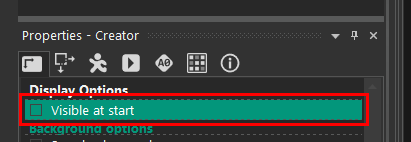
Dla obiektów (Sprite) My Object Red, (Sprite) My Object i (Sprite) My Object Yellow wyłaczam tworzenie na starcie.
Przygotywuje w Event Editor prosty skrypt by dla każdego obiektu Creator utworzył (Sprite) My Object.
Tak prezentuje się tworzenie obiektów:
Dla niepotrzebnym nam obiektom w frame, wyłaczam ich możliwość tworzenia na starcie by były tylko utworzone (Sprite) My Object.
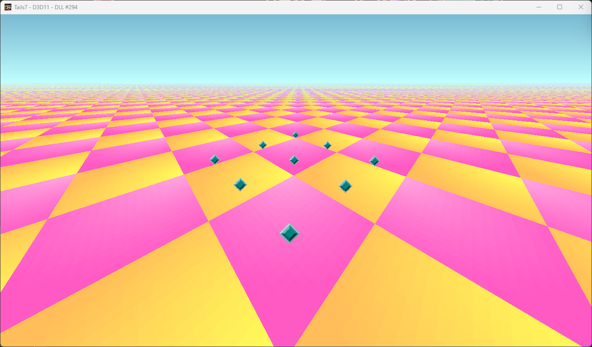
Zrobiłem mały przykład przy użyciu kilka tych zmiennych i tak to wygląda:
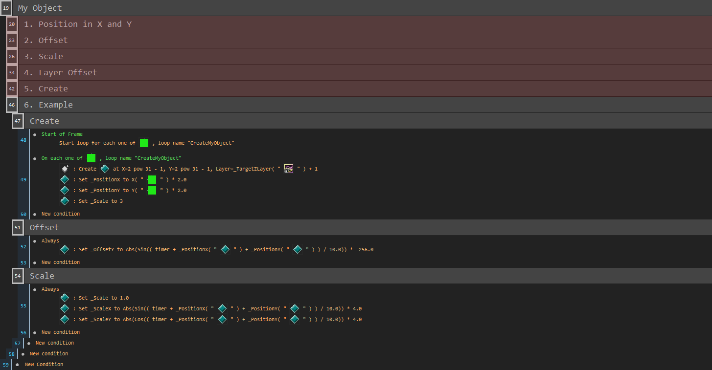